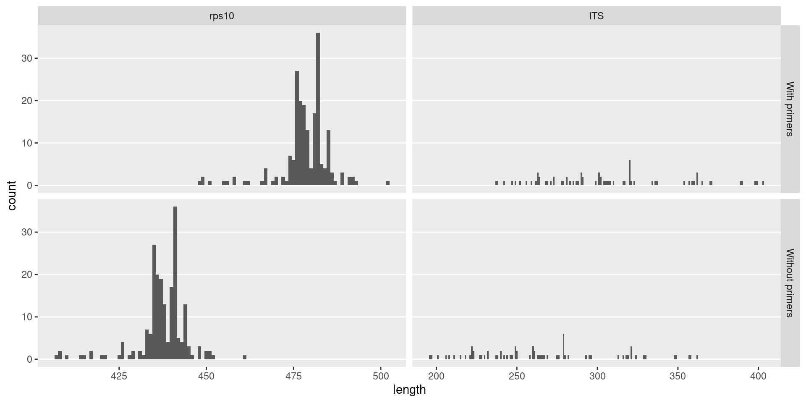
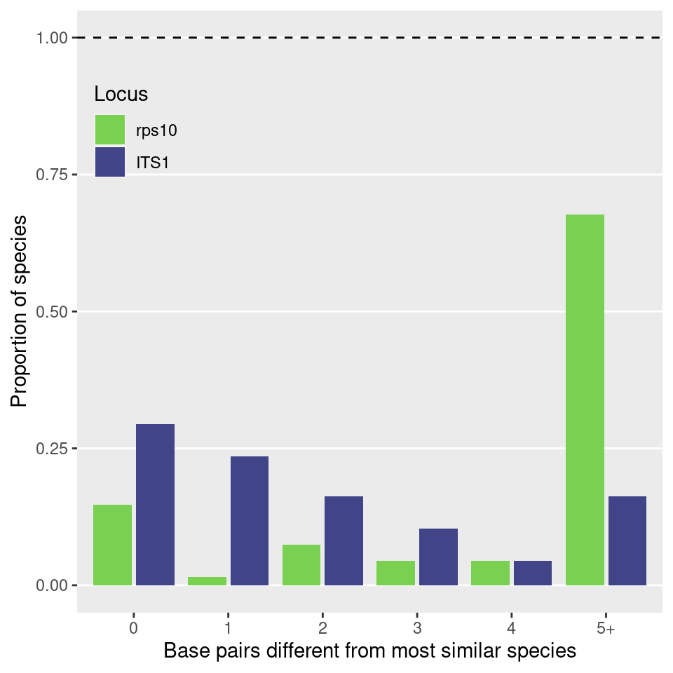
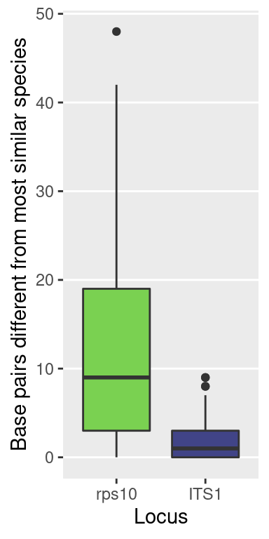
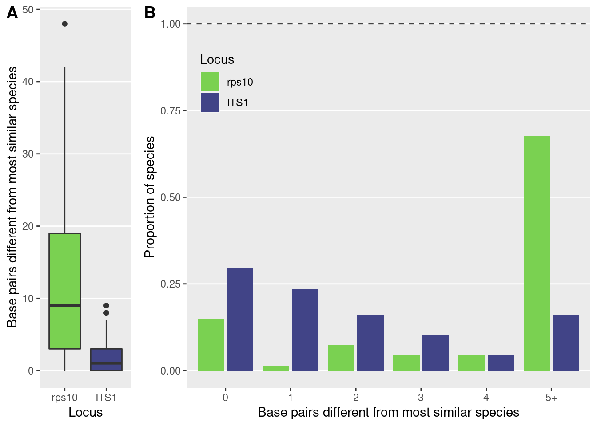

library(dplyr)
library(purrr)
library(furrr)
library(tidyr)
library(readr)
library(ggplot2)
library(sessioninfo)
library(metacoder)
library(vegan)
library(viridis)
library(DT)
library(stringr)
library(qsubmitter)
library(taxize)
library(forcats)
library(Biostrings)
library(ips)
library(insect)
library(ggpubr)
library(knitr)seed <- 1
only_shared_species <- TRUE # If TRUE, only use species that are present in both databases
subsample_to_same_num <- TRUE # If TRUE, subsample the amplicons used to the same number for each database
set.seed(seed)Commands that have “future” in them are run on multiple cores using the furrr and future packages.
plan(multiprocess)## Warning: [ONE-TIME WARNING] Forked processing ('multicore') is disabled
## in future (>= 1.13.0) when running R from RStudio, because it is
## considered unstable. Because of this, plan("multicore") will fall
## back to plan("sequential"), and plan("multiprocess") will fall back to
## plan("multisession") - not plan("multicore") as in the past. For more details,
## how to control forked processing or not, and how to silence this warning in
## future R sessions, see ?future::supportsMulticoreThis analysis will attempt to estimate how good each locus is at distinguishing species, what I am calling “taxonomic resolution”. I will use the primer sequences and reference databases for each method to extract the portion of the sequence that would be amplified. I then align each sequence to all other sequences and record how many base pairs different each sequence is from the most similar sequence from a different species. The method with the highest numbers should be the one with the highest taxonomic resolution. This is similar to a barcode gap analysis, except that only the most similar comparisons are considered.
rps_ref <- read_fasta(file.path('intermediate_data', 'reference_databases', 'rps10_reference_db.fa'))
its_ref <- read_fasta(file.path('intermediate_data', 'reference_databases', 'its1_reference_db.fa'))
rps_ref <- rps_ref[grepl(names(rps_ref), pattern = 'Oomycetes')]
its_ref <- its_ref[grepl(names(its_ref), pattern = 'Oomycetes')]Remove spaces from sequences (not sure why there would be spaces).
rps_ref <- trimws(gsub(rps_ref, pattern = ' ', replacement = ''))
its_ref <- trimws(gsub(its_ref, pattern = ' ', replacement = ''))Replace names with just species names
names(rps_ref) <- str_match(names(rps_ref), ';([a-zA-Z0-9_\\-\'". ]+);oodb_.+;$')[,2]
names(its_ref) <- str_match(names(its_ref), ';([a-zA-Z0-9_\\-\'". ]+);(unite|rob2011|phytodb|mock)_.+;$')[,2]Replace underscores with spaces
names(rps_ref) <- gsub(names(rps_ref), pattern = '_', replacement = ' ')
names(its_ref) <- gsub(names(its_ref), pattern = '_', replacement = ' ')Remove species with ambiguous names or numbers
is_ambiguous <- function(n) {
grepl(n, pattern = ' sp$') |
grepl(n, pattern = ' spp$') |
grepl(n, pattern = ' spp.') |
grepl(n, pattern = ' sp.') |
grepl(n, pattern = ' aff. ') |
grepl(n, pattern = ' cf.') |
grepl(n, pattern = '[0-9]+')
}
rps_ref <- rps_ref[! is_ambiguous(names(rps_ref))]
its_ref <- its_ref[! is_ambiguous(names(its_ref))]Remove information below species
names(rps_ref) <- sub(names(rps_ref), pattern = ' var\\.?.+$', replacement = '')
names(rps_ref) <- sub(names(rps_ref), pattern = ' subsp\\.?.+$', replacement = '')
names(its_ref) <- sub(names(its_ref), pattern = ' var\\.?.+$', replacement = '')
names(its_ref) <- sub(names(its_ref), pattern = ' subsp\\.?.+$', replacement = '')Now the names should be cleaned up enough that they can be compared to eachother:
unique(names(rps_ref))## [1] "Achlya hypogyna" "Albugo laibachii"
## [3] "Aphanomyces astaci" "Aphanomyces cladogamus"
## [5] "Aphanomyces cochlioides" "Aphanomyces euteiches"
## [7] "Aphanomyces frigidophilus" "Aphanomyces invadans"
## [9] "Aphanomyces laevis" "Aphanomyces stellatus"
## [11] "Bremia lactucae" "Bremia sonchicola"
## [13] "Halophytophthora bahamensis" "Halophytophthora batemanensis"
## [15] "Halophytophthora polymorphica" "Halophytophthora porrigovesica"
## [17] "Hyaloperonospora parasitica" "Peronosclerospora philippinensis"
## [19] "Peronosclerospora sacchari" "Peronosclerospora sorghi"
## [21] "Peronospora effusa" "Peronospora atriplicis-hastatae"
## [23] "Peronospora belbahrii" "Peronospora boni-henrici"
## [25] "Peronospora lepigoni" "Peronospora litoralis"
## [27] "Peronospora minor" "Peronospora obovata"
## [29] "Peronospora polycarpi" "Peronospora rumicis"
## [31] "Peronospora schachtii" "Peronospora tabacina"
## [33] "Peronospora destructor" "Phytophthora agathidicida"
## [35] "Phytophthora alni" "Phytophthora amnicola"
## [37] "Phytophthora andina" "Phytophthora aquimorbida"
## [39] "Phytophthora arecae" "Phytophthora arenaria"
## [41] "Phytophthora asiatica" "Phytophthora asparagi"
## [43] "Phytophthora austrocedri" "Phytophthora betacei"
## [45] "Phytophthora bilorbang" "Phytophthora bishii"
## [47] "Phytophthora bisheria" "Phytophthora boehmeriae"
## [49] "Phytophthora boodjera" "Phytophthora borealis"
## [51] "Phytophthora botryosa" "Phytophthora brassicae"
## [53] "Phytophthora cactorum" "Phytophthora cajani"
## [55] "Phytophthora cambivora" "Phytophthora capensis"
## [57] "Phytophthora capsici" "Phytophthora captiosa"
## [59] "Phytophthora chlamydospora" "Phytophthora cinnamomi"
## [61] "Phytophthora citrophthora" "Phytophthora clandestina"
## [63] "Phytophthora colocasiae" "Phytophthora condilina"
## [65] "Phytophthora constricta" "Phytophthora cooljarloo"
## [67] "Phytophthora crassamura" "Phytophthora cryptogea"
## [69] "Phytophthora cuyabensis" "Phytophthora cyperi"
## [71] "Phytophthora drechsleri" "Phytophthora elongata"
## [73] "Phytophthora erythroseptica" "Phytophthora europaea"
## [75] "Phytophthora fallax" "Phytophthora fluvialis"
## [77] "Phytophthora foliorum" "Phytophthora fragariae"
## [79] "Phytophthora frigida" "Phytophthora gallica"
## [81] "Phytophthora gemini" "Phytophthora gibbosa"
## [83] "Phytophthora glovera" "Phytophthora gonapodyides"
## [85] "Phytophthora gondwanensis" "Phytophthora gregata"
## [87] "Phytophthora hedraiandra" "Phytophthora heveae"
## [89] "Phytophthora hibernalis" "Phytophthora himalsilva"
## [91] "Phytophthora humicola" "Phytophthora hydrogena"
## [93] "Phytophthora hydropathica" "Phytophthora idaei"
## [95] "Phytophthora ilicis" "Phytophthora infestans"
## [97] "Phytophthora insolita" "Phytophthora ipomoeae"
## [99] "Phytophthora iranica" "Phytophthora irrigata"
## [101] "Phytophthora katsurae" "Phytophthora kelmania"
## [103] "Phytophthora kernoviae" "Phytophthora kwongonina"
## [105] "Phytophthora lacustris" "Phytophthora lagoariana"
## [107] "Phytophthora lateralis" "Phytophthora litoralis"
## [109] "Phytophthora macrochlamydospora" "Phytophthora meadii"
## [111] "Phytophthora medicaginis" "Phytophthora megakarya"
## [113] "Phytophthora megasperma" "Phytophthora melonis"
## [115] "Phytophthora mengei" "Phytophthora mexicana"
## [117] "Phytophthora mirabilis" "Phytophthora mirablis"
## [119] "Phytophthora moyootj" "Phytophthora multivesiculata"
## [121] "Phytophthora multivora" "Phytophthora nicotianae"
## [123] "Phytophthora niederhauserii" "Phytophthora oreophila"
## [125] "Phytophthora ornamentata" "Phytophthora cacuminis"
## [127] "Phytophthora palmivora" "Phytophthora parsiana"
## [129] "Phytophthora parvispora" "Phytophthora phaseoli"
## [131] "Phytophthora pini" "Phytophthora pinifolia"
## [133] "Phytophthora pistaciae" "Phytophthora plurivora"
## [135] "Phytophthora pluvialis" "Phytophthora polonica"
## [137] "Phytophthora porri" "Phytophthora primulae"
## [139] "Phytophthora pseudocryptogea" "Phytophthora pseudorosacearum"
## [141] "Phytophthora pseudosyringae" "Phytophthora pseudotsugae"
## [143] "Phytophthora psychrophila" "Phytophthora quercetorum"
## [145] "Phytophthora quercina" "Phytophthora quininea"
## [147] "Phytophthora ramorum" "Phytophthora richardiae"
## [149] "Phytophthora riparia" "Phytophthora rosacearum"
## [151] "Phytophthora rubi" "Phytophthora sansomeana"
## [153] "Phytophthora siskiyouensis" "Phytophthora sulawesiensis"
## [155] "Phytophthora syringae" "Phytophthora tentaculata"
## [157] "Phytophthora thermophila" "Phytophthora trifolii"
## [159] "Phytophthora tropicalis" "Phytophthora uliginosa"
## [161] "Phytophthora versiformis" "Phytophthora vignae"
## [163] "Phytophthora x stagnum" "Phytophthora citricola"
## [165] "Phytophthora nemorosa" "Phytophthora sojae"
## [167] "Phytopythium aichiense" "Phytopythium carbonicum"
## [169] "Phytopythium chamaehyphon" "Phytopythium citrinum"
## [171] "Phytopythium kandeliae" "Phytopythium litorale"
## [173] "Phytopythium montanum" "Phytopythium oedochilum"
## [175] "Phytopythium sindhum" "Phytopythium vexans"
## [177] "Plasmopara halstedii" "Plasmopara obducens"
## [179] "Plasmopara viticola" "Pseudoperonospora cubensis"
## [181] "Pseudoperonospora humuli" "Pythium abappressorium"
## [183] "Pythium acanthophoron" "Pythium acrogynum"
## [185] "Pythium adhaerens" "Pythium alternatum"
## [187] "Pythium anandrum" "Pythium angustatum"
## [189] "Pythium aphanidermatum" "Pythium apiculatum"
## [191] "Pythium apleroticum" "Pythium barbulae"
## [193] "Pythium biforme" "Pythium brachiatum"
## [195] "Pythium camurandrum" "Pythium canariense"
## [197] "Pythium carolinianum" "Pythium cederbergense"
## [199] "Pythium chondricola" "Pythium citrinum"
## [201] "Pythium conidiophorum" "Pythium contiguanum"
## [203] "Pythium cryptoirregulare" "Pythium cylindrosporum"
## [205] "Pythium cystogenes" "Pythium debaryanum"
## [207] "Pythium dimorphum" "Pythium dissimile"
## [209] "Pythium dissotocum" "Pythium echinulatum"
## [211] "Pythium emineosum" "Pythium folliculosum"
## [213] "Pythium glomeratum" "Pythium heterothallicum"
## [215] "Pythium hypogynum" "Pythium insidiosum"
## [217] "Pythium irregulare" "Pythium iwayamai"
## [219] "Pythium junctum" "Pythium kashmirense"
## [221] "Pythium kunmingense" "Pythium longandrum"
## [223] "Pythium longisporangium" "Pythium lucens"
## [225] "Pythium lutarium" "Pythium lycopersicum"
## [227] "Pythium mamillatum" "Pythium mastophorum"
## [229] "Phytopythium megacarpum" "Pythium middletoni"
## [231] "Pythium monospermum" "Pythium mercuriale"
## [233] "Pythium nagaii" "Pythium oligandrum"
## [235] "Pythium oopapillum" "Pythium ornacarpum"
## [237] "Pythium ornamentatum" "Pythium pachycaule"
## [239] "Pythium paddicum" "Pythium parvum"
## [241] "Pythium pectinolyticum" "Pythium periilum"
## [243] "Pythium perplexum" "Pythium phragmiticola"
## [245] "Pythium phragmitis" "Pythium pleroticum"
## [247] "Pythium prolatum" "Pythium radiosum"
## [249] "Pythium rhizo-oryzae" "Pythium rhizosaccharum"
## [251] "Pythium rishiriense" "Pythium rostratifingens"
## [253] "Pythium scleroteichum" "Pythium segnitium"
## [255] "Pythium selbyi" "Pythium senticosum"
## [257] "Pythium sukuiense" "Pythium takayamanum"
## [259] "Pythium terrestris" "Pythium tracheiphilum"
## [261] "Pythium ultimum" "Pythium undulatum"
## [263] "Pythium utonaiense" "Pythium viniferum"
## [265] "Pythium violae" "Pythium aristosporum"
## [267] "Pythium arrhenomanes" "Pythium catenulatum"
## [269] "Pythium coloratum" "Pythium graminicola"
## [271] "Pythium myriotylum" "Pythium nunn"
## [273] "Pythium pyrilobum" "Pythium sylvaticum"
## [275] "Pythium vanterpoolii" "Pythium volutum"
## [277] "Salisapilia tartarea" "Salisapilia nakagirii"
## [279] "Salisapilia sapeloensis" "Saprolegnia diclina"
## [281] "Saprolegnia ferax" "Saprolegnia parasitica"
## [283] "Sclerospora graminicola" "Thraustotheca clavata"
## [285] "Pythium rhizoterrae" "Pythium aquasilvae"
## [287] "Halophytophthora exoprolifera" "Halophytophthora kandeliae"
## [289] "Lagenidium pulchrum" "Lagenidium sinuatum"
## [291] "Phytopythium boreale" "Phytopythium delwarense"
## [293] "Phytopythium helicoides" "Phytopythium mercuriale"
## [295] "Phytopythium mirpurense" "Phytopythium ostracodes"
## [297] "Pythium amasculinum" "Pythium apinafurcum"
## [299] "Pythium aquatile" "Pythium attrantheridium"
## [301] "Pythium brassicum" "Pythium capillosum"
## [303] "Pythium cucurbitacearum" "Pythium diclinum"
## [305] "Pythium erinaceum" "Pythium flevoense"
## [307] "Pythium grandisporangium" "Pythium hydnosporum"
## [309] "Pythium inflatum" "Pythium intermedium"
## [311] "Pythium iriomotense" "Pythium jasmonium"
## [313] "Pythium marsipum" "Pythium megalacanthum"
## [315] "Pythium middletonii" "Pythium minus"
## [317] "Pythium nodosum" "Pythium okanoganense"
## [319] "Pythium orthogonon" "Pythium paroecandrum"
## [321] "Pythium periplocum" "Pythium plurisporium"
## [323] "Pythium porphyrae" "Pythium recalcitrans"
## [325] "Pythium salpingophorum" "Pythium schmitthenneri"
## [327] "Pythium solare" "Pythium tardicrescens"
## [329] "Pythium terretris" "Pythium torulosum"
## [331] "Pythium uncinulatum" "Pythium volotum"unique(names(its_ref))## [1] "Bremia lactucae"
## [2] "Hyaloperonospora erophilae"
## [3] "Hyaloperonospora thlaspeos-arvensis"
## [4] "Hyaloperonospora parasitica"
## [5] "Hyaloperonospora cheiranthi"
## [6] "Phytophthora cryptogea"
## [7] "Peronospora myosotidis"
## [8] "Peronospora trifoliorum"
## [9] "Peronospora trifolii-minoris"
## [10] "Peronospora astragalina"
## [11] "Aphanomyces euteiches"
## [12] "Aphanomyces cochlioides"
## [13] "Peronospora conglomerata"
## [14] "Peronospora agrestis"
## [15] "Peronospora flava"
## [16] "Phytophthora infestans"
## [17] "Pythium ultimum"
## [18] "Albugo candida"
## [19] "Plasmopara halstedii"
## [20] "Plasmopara obducens"
## [21] "Plasmopara nivea"
## [22] "Peronospora potentillae"
## [23] "Perofascia lepidii"
## [24] "Peronospora lamii"
## [25] "Peronospora manshurica"
## [26] "Peronospora meliloti"
## [27] "Peronospora alsinearum"
## [28] "Peronospora ervi"
## [29] "Peronospora polygoni"
## [30] "Pseudoperonospora urticae"
## [31] "Phytophthora nicotianae"
## [32] "Peronospora farinosa"
## [33] "Phytophthora capsici"
## [34] "Peronospora parva"
## [35] "Peronospora radii"
## [36] "Peronospora chenopodii-polyspermi"
## [37] "Pythium graminicola"
## [38] "Peronospora corydalis"
## [39] "Plasmopara pusilla"
## [40] "Peronospora viciae"
## [41] "Peronospora coronillae"
## [42] "Peronospora aestivalis"
## [43] "Peronospora sordida"
## [44] "Peronospora boni-henrici"
## [45] "Peronospora chlorae"
## [46] "Pseudoperonospora cannabina"
## [47] "Peronospora destructor"
## [48] "Achlya ambisexualis"
## [49] "Achlya americana"
## [50] "Achlya aquatica"
## [51] "Achlya bisexualis"
## [52] "Achlya caroliniana"
## [53] "Achlya colorata"
## [54] "Achlya conspicua"
## [55] "Achlya dubia"
## [56] "Achlya flagellata"
## [57] "Achlya glomerata"
## [58] "Achlya heterosexualis"
## [59] "Achlya oligacantha"
## [60] "Achlya papillosa"
## [61] "Achlya racemosa"
## [62] "Achlya radiosa"
## [63] "Achlya recurva"
## [64] "Aphanomyces cladogamus"
## [65] "Aphanomyces iridis"
## [66] "Aphanomyces laevis"
## [67] "Apodachlya brachynema"
## [68] "Apodachlya minima"
## [69] "Basidiophora entospora"
## [70] "Brevilegnia gracilis"
## [71] "Brevilegnia macrospora"
## [72] "Brevilegnia unisperma"
## [73] "Brevilegnia"
## [74] "Eurychasma dicksonii"
## [75] "Halophytophthora exoprolifera"
## [76] "Halophytophthora kandeliae"
## [77] "Salisapilia tartarea"
## [78] "Hyaloperonospora nesliae"
## [79] "Hyaloperonospora sisymbrii-sophiae"
## [80] "Lagenidium caudatum"
## [81] "Leptolegnia caudata"
## [82] "Peronospora aparines"
## [83] "Peronospora calotheca"
## [84] "Peronospora sherardiae"
## [85] "Peronospora valerianellae"
## [86] "Peronospora violae"
## [87] "Phytophthora citricola"
## [88] "Phytophthora alni"
## [89] "Phytophthora alticola"
## [90] "Phytophthora arecae"
## [91] "Phytophthora austrocedrae"
## [92] "Halophytophthora avicenniae"
## [93] "Phytophthora batemanensis"
## [94] "Phytophthora bisheria"
## [95] "Phytophthora boehmeriae"
## [96] "Phytophthora botryosa"
## [97] "Phytophthora brassicae"
## [98] "Phytophthora cactorum"
## [99] "Phytophthora cajani"
## [100] "Phytophthora cambivora"
## [101] "Phytophthora captiosa"
## [102] "Phytophthora cinnamomi"
## [103] "Phytophthora citrophthora"
## [104] "Phytophthora clandestina"
## [105] "Phytophthora colocasiae"
## [106] "Phytophthora drechsleri"
## [107] "Halophytophthora epistomium"
## [108] "Phytophthora erythroseptica"
## [109] "Phytophthora europaea"
## [110] "Phytophthora fallax"
## [111] "Phytophthora foliorum"
## [112] "Phytophthora fragariae"
## [113] "Phytophthora frigida"
## [114] "Phytophthora gonapodyides"
## [115] "Phytophthora hedraiandra"
## [116] "Phytophthora heveae"
## [117] "Phytophthora hibernalis"
## [118] "Phytophthora himalayensis"
## [119] "Phytophthora humicola"
## [120] "Phytophthora idaei"
## [121] "Phytophthora ilicis"
## [122] "Phytophthora inflata"
## [123] "Phytophthora insolita"
## [124] "Phytophthora inundata"
## [125] "Phytophthora ipomoeae"
## [126] "Phytophthora iranica"
## [127] "Phytophthora katsurae"
## [128] "Phytophthora kernoviae"
## [129] "Phytophthora lateralis"
## [130] "Phytophthora litchii"
## [131] "Phytophthora macrochlamydospora"
## [132] "Phytophthora meadii"
## [133] "Phytophthora medicaginis"
## [134] "Phytophthora megakarya"
## [135] "Phytophthora megasperma"
## [136] "Phytophthora melonis"
## [137] "Phytophthora mengei"
## [138] "Phytophthora mexicana"
## [139] "Phytophthora mirabilis"
## [140] "Phytophthora multivesiculata"
## [141] "Phytophthora multivora"
## [142] "Phytophthora nemorosa"
## [143] "Phytophthora palmivora"
## [144] "Phytophthora parsiana"
## [145] "Phytophthora phaseoli"
## [146] "Phytophthora pini"
## [147] "Phytophthora pinifolia"
## [148] "Phytophthora pistaciae"
## [149] "Phytophthora plurivora"
## [150] "Phytophthora polonica"
## [151] "Halophytophthora polymorphica"
## [152] "Phytophthora porri"
## [153] "Phytophthora primulae"
## [154] "Phytophthora pseudosyringae"
## [155] "Phytophthora pseudotsugae"
## [156] "Phytophthora psychrophila"
## [157] "Phytophthora quercetorum"
## [158] "Phytophthora quercina"
## [159] "Phytophthora quininea"
## [160] "Phytophthora ramorum"
## [161] "Phytophthora rosacearum"
## [162] "Phytophthora rubi"
## [163] "Phytophthora sansomea"
## [164] "Phytophthora sinensis"
## [165] "Phytophthora siskiyouensis"
## [166] "Phytophthora sojae"
## [167] "Phytophthora andina"
## [168] "Phytophthora asparagi"
## [169] "Phytophthora sulawesiensis"
## [170] "Phytophthora syringae"
## [171] "Phytophthora tabaci"
## [172] "Phytophthora tentaculata"
## [173] "Phytophthora trifolii"
## [174] "Phytophthora tropicalis"
## [175] "Phytophthora uliginosa"
## [176] "Phytophthora vignae"
## [177] "Pythium vexans"
## [178] "Phytopythium boreale"
## [179] "Phytopythium carbonicum"
## [180] "Pythium chamaihyphon"
## [181] "Ovatisporangium citrinum"
## [182] "Phytopythium cucurbitacearum"
## [183] "Phytopythium helicoides"
## [184] "Ovatisporangium litorale"
## [185] "Phytopythium megacarpum"
## [186] "Ovatisporangium montanum"
## [187] "Phytopythium oedochilum"
## [188] "Pythium ostracodes"
## [189] "Phytopythium sindhum"
## [190] "Plasmopara euphrasiae"
## [191] "Plasmoverna anemones-ranunculoides"
## [192] "Plectospira myriandra"
## [193] "Protoachlya paradoxa"
## [194] "Pseudoperonospora cubensis"
## [195] "Pythiogeton zeae"
## [196] "Pythiopsis terrestris"
## [197] "Pythium abappressorium"
## [198] "Pythium acanthicum"
## [199] "Pythium acanthophoron"
## [200] "Pythium acrogynum"
## [201] "Pythium adhaerens"
## [202] "Pythium afertile"
## [203] "Pythium attrantheridium"
## [204] "Pythium macrosporum"
## [205] "Pythium oopapillum"
## [206] "Pythium pleroticum"
## [207] "Pythium polymastum"
## [208] "Pythium volutum"
## [209] "Pythium amasculinum"
## [210] "Elongisporangium anandrum"
## [211] "Pythium angustatum"
## [212] "Pythium aphanidermatum"
## [213] "Pythium apiculatum"
## [214] "Pythium apleroticum"
## [215] "Pythium aquatile"
## [216] "Pythium aristosporum"
## [217] "Pythium arrhenomanes"
## [218] "Pythium buismaniae"
## [219] "Pythium camurandrum"
## [220] "Pythium canariense"
## [221] "Pythium capillosum"
## [222] "Pythium carolinianum"
## [223] "Pythium catenulatum"
## [224] "Pythium chondricola"
## [225] "Pythium coloratum"
## [226] "Pythium conidiophorum"
## [227] "Pythium contiguanum"
## [228] "Pythium cryptoirregulare"
## [229] "Pythium cylindrosporum"
## [230] "Pythium cystogenes"
## [231] "Pythium debaryanum"
## [232] "Pythium deliense"
## [233] "Pythium diclinum"
## [234] "Pythium dimorphum"
## [235] "Pythium dissimile"
## [236] "Pythium dissotocum"
## [237] "Pythium echinulatum"
## [238] "Pythium emineosum"
## [239] "Pythium erinaceum"
## [240] "Pythium flevoense"
## [241] "Pythium folliculosum"
## [242] "Pythium glomeratum"
## [243] "Pythium grandisporangium"
## [244] "Pythium helicandrum"
## [245] "Pythium heterothallicum"
## [246] "Pythium hydnosporum"
## [247] "Pythium hypogynum"
## [248] "Pythium inflatum"
## [249] "Pythium insidiosum"
## [250] "Pythium intermedium"
## [251] "Pythium irregulare"
## [252] "Pythium iwayamai"
## [253] "Pythium kashmirense"
## [254] "Pythium kunmingense"
## [255] "Pythium longandrum"
## [256] "Pythium longisporangium"
## [257] "Pythium lucens"
## [258] "Pythium lutarium"
## [259] "Pythium lycopersicum"
## [260] "Pythium mamillatum"
## [261] "Pythium marsipium"
## [262] "Pythium mastophorum"
## [263] "Pythium megalacanthum"
## [264] "Pythium middletonii"
## [265] "Pythium minus"
## [266] "Pythium monospermum"
## [267] "Pythium multisporum"
## [268] "Pythium myriotylum"
## [269] "Pythium nagaii"
## [270] "Pythium nodosum"
## [271] "Pythium nunn"
## [272] "Pythium okanoganense"
## [273] "Pythium oligandrum"
## [274] "Pythium ornacarpum"
## [275] "Pythium ornamentatum"
## [276] "Pythium orthogonon"
## [277] "Pythium pachycaule"
## [278] "Pythium paddicum"
## [279] "Pythium paroecandrum"
## [280] "Pythium parvum"
## [281] "Pythium pectinolyticum"
## [282] "Pythium periilum"
## [283] "Pythium periplocum"
## [284] "Pythium perplexum"
## [285] "Pythium phragmitis"
## [286] "Pythium plurisporium"
## [287] "Pythium porphyrae"
## [288] "Pythium prolatum"
## [289] "Pythium pyrilobum"
## [290] "Pythium radiosum"
## [291] "Pythium rhizo-oryzae"
## [292] "Pythium rhizosaccharum"
## [293] "Pythium rostratifingens"
## [294] "Pythium rostratum"
## [295] "Pythium salpingophorum"
## [296] "Pythium scleroteichum"
## [297] "Pythium segnitium"
## [298] "Pythium senticosum"
## [299] "Pythium jasmonium"
## [300] "Pythium sukuiense"
## [301] "Pythium sulcatum"
## [302] "Pythium sylvaticum"
## [303] "Pythium takayamanum"
## [304] "Pythium tardicrescens"
## [305] "Pythium terrestris"
## [306] "Pythium torulosum"
## [307] "Pythium tracheiphilum"
## [308] "Pythium uncinulatum"
## [309] "Elongisporangium undulatum"
## [310] "Pythium vanterpoolii"
## [311] "Pythium viniferum"
## [312] "Pythium violae"
## [313] "Pythium zingiberis"
## [314] "Saprolegnia anisospora"
## [315] "Saprolegnia asterophora"
## [316] "Saprolegnia delica"
## [317] "Saprolegnia diclina"
## [318] "Saprolegnia eccentrica"
## [319] "Saprolegnia ferax"
## [320] "Saprolegnia hypogyna"
## [321] "Saprolegnia lapponica"
## [322] "Saprolegnia litoralis"
## [323] "Saprolegnia megasperma"
## [324] "Saprolegnia mixta"
## [325] "Saprolegnia monilifera"
## [326] "Saprolegnia monoica"
## [327] "Saprolegnia parasitica"
## [328] "Achlya rodrigueziana"
## [329] "Saprolegnia subterranea"
## [330] "Saprolegnia terrestris"
## [331] "Saprolegnia turfosa"
## [332] "Saprolegnia unispora"
## [333] "Thraustotheca clavata"
## [334] "Thraustotheca terrestris"
## [335] "Phytophthora glovera"
## [336] "Phytophthora capensis"
## [337] "Phytophthora lacustris"
## [338] "Phytophthora sansomeana"
## [339] "Phytophthora richardiae"
## [340] "Phytophthora thermophila"
## [341] "Phytophthora irrigata"
## [342] "Phytophthora hydropathica"
## [343] "Phytophthora gallica"
## [344] "Peronospora effusa"
## [345] "Peronospora schachtii"
## [346] "Phytophthora himalsilva"
## [347] "Phytophthora hydrogena"
## [348] "Phytophthora pluvialis"
## [349] "Phytopythium citrinum"
## [350] "Pythium undulatum"Although there are a similar number of species, each database has a distinct set of species:
table(unique(names(rps_ref)) %in% unique(names(its_ref)))##
## FALSE TRUE
## 105 227table(unique(names(its_ref)) %in% unique(names(rps_ref)))##
## FALSE TRUE
## 123 227This could influence the comparison, so we can use only species present in both to avoid that:
if (only_shared_species) {
common_species <- intersect(unique(names(rps_ref)), unique(names(its_ref)))
rps_ref <- rps_ref[names(rps_ref) %in% common_species]
its_ref <- its_ref[names(its_ref) %in% common_species]
}Only the amplified sequence contribute to the taxonomic resolution of the locus, so I will have to find that region in reference database sequences. Not all reference sequences will have the entire region however. Some will have the region but not the primer sites, making things more complicated.
primer_data <- read_csv(file.path("raw_data", "primer_data.csv"))##
## ── Column specification ────────────────────────────────────────────────────────
## cols(
## primer_id = col_character(),
## locus = col_character(),
## direction = col_character(),
## sequence = col_character()
## )primer_data <- filter(primer_data, primer_id != 'rps10_f-F')
primer_data## # A tibble: 4 x 4
## primer_id locus direction sequence
## <chr> <chr> <chr> <chr>
## 1 rps10-F rps10 Forward GTTGGTTAGAGYARAAGACT
## 2 rps10-R rps10 Reverse ATRYYTAGAAAGAYTYGAACT
## 3 ITS6 ITS Forward GAAGGTGAAGTCGTAACAAGG
## 4 ITS7 ITS Reverse AGCGTTCTTCATCGATGTGCThe matchProbePair function from the Biostrings package can extract a region predicted to be amplified by primers, but for some reason it does not allow for ambiguity codes, even though it is a trivial change to make it do so. Below is a modified version of the function that does allow ambiguity codes by providing the fixed parameter and passing it to the matchPattern calls.
matchProbePair <- function(Fprobe, Rprobe, subject, algorithm="auto",
logfile=NULL, verbose=FALSE, fixed = FALSE)
{
## This won't copy the data if Fprobe and Rprobe are already DNAString objects
F <- DNAString(Fprobe)
R <- DNAString(Rprobe)
## F and R hits on the + strand
Fp_hits <- start(matchPattern(F, subject, algorithm=algorithm, fixed = fixed))
Rp_hits <- start(matchPattern(R, subject, algorithm=algorithm, fixed = fixed))
## F and R hits on the - strand
Fm_hits <- end(matchPattern(reverseComplement(F), subject, algorithm=algorithm, fixed = fixed))
Rm_hits <- end(matchPattern(reverseComplement(R), subject, algorithm=algorithm, fixed = fixed))
if (verbose) {
cat("Fp_hits:", Fp_hits, " Rp_hits:", Rp_hits,
" Fm_hits:", Fm_hits, " Rm_hits:", Rm_hits, "\n")
}
matches0 <- Biostrings:::reduceProbePairMatches(c(Fp_hits, Rp_hits), c(Fm_hits, Rm_hits))
ans <- Views(subject, start=matches0$start, end=matches0$end)
if (!is.null(logfile)) {
nFp <- length(Fp_hits)
nRp <- length(Rp_hits)
nFm <- length(Fm_hits)
nRm <- length(Rm_hits)
nmatches0 <- length(ans)
## cat("", ..., sep="\t") is a trick to get an extra tab
cat("", nFp, nRp, nFm, nRm, nmatches0, file=logfile, sep="\t")
}
ans
}The code below extracts predicted amplicons using primer matches, removes the primers, and aligns the trimmed amplicons to the sequences that did not have primer matches to try to find other sequences in the reference databases that do not have primer sequences but are full length matches to those that do.
get_amplicon_chr <- function(seq) {
map2_chr(seq@ranges@start, seq@ranges@width, function(s, w) {
as.character(seq@subject[seq(from = s, length.out = w)])
})
}
calc_amplicons <- function(seqs, forward, reverse, min_coverage = 0.9, ...) {
# Get simulated amplicons using primers
full_amps <- future_map(seqs, function(s) {
get_amplicon_chr(matchProbePair(DNAString(s), Fprobe = forward, Rprobe = reverse))
})
# Check for multiple possible amplicons per input
if (any(map_int(full_amps, length) > 1)) {
stop('Some inputs have more than one amplicons.')
}
full_amps <- unlist(full_amps[map_int(full_amps, length) == 1])
# Remove primers from amplicons
full_amps <- substr(full_amps, start = nchar(forward) + 1, stop = nchar(full_amps) - nchar(reverse))
# Align unamplified sequences with best matching amplicons
unamped <- seqs[! names(seqs) %in% names(full_amps)]
unamped_aligned <- future_map_chr(unamped, function(s) {
aligned <- pairwiseAlignment(pattern = full_amps, subject = s,
type = 'global-local',
# type = 'overlap',
gapOpening = 10, gapExtension = 4)
best_score_i <- which.max(aligned@score)
best_align <- aligned[best_score_i]
aligned_subject_char <- gsub(as.character(best_align@subject), pattern = '-', replacement = '')
aligned_amp_char <- gsub(as.character(best_align@pattern), pattern = '-', replacement = '')
if (best_align@pattern@range@width < best_align@pattern@unaligned@ranges@width * min_coverage || nchar(aligned_subject_char) == 0) {
aligned_subject_char <- NA
}
aligned_subject_char
})
# Add full amplicons to inferred amplicons from alignment
all_amps <- c(full_amps, unamped_aligned[! is.na(unamped_aligned)])
all_amps <- all_amps[is.na(all_amps) | nchar(all_amps) > 0]
setNames(all_amps[names(seqs)], names(seqs))
}
rps_amps <- calc_amplicons(rps_ref,
forward = primer_data$sequence[primer_data$direction == 'Forward' & primer_data$locus == 'rps10'],
reverse = primer_data$sequence[primer_data$direction == 'Reverse' & primer_data$locus == 'rps10'])
its_amps <- calc_amplicons(its_ref,
forward = primer_data$sequence[primer_data$direction == 'Forward' & primer_data$locus == 'ITS'],
reverse = primer_data$sequence[primer_data$direction == 'Reverse' & primer_data$locus == 'ITS'])The amplicon could not be extracted from many sequences, probably because it was incomplete, but enough can be to compare the two methods. Here is the proportion of reference sequences with full length amplicons extracted:
table(is.na(rps_amps))##
## FALSE TRUE
## 649 48table(is.na(its_amps))##
## FALSE TRUE
## 706 544Lets remove those from the databases:
rps_amps <- rps_amps[! is.na(rps_amps)]
its_amps <- its_amps[! is.na(its_amps)]Lets also remove any sequences that are duplicates (same sequence and same species name):
rps_amps <- rps_amps[! duplicated(paste0(names(rps_amps), rps_amps))]
its_amps <- its_amps[! duplicated(paste0(names(its_amps), its_amps))]And sort them by name:
rps_amps <- rps_amps[order(names(rps_amps))]
its_amps <- its_amps[order(names(its_amps))]And here is the distribution of amplicon lengths with and without primers:
amp_data <- tibble(locus = rep(c('rps10', 'ITS'), c(length(rps_amps), length(its_amps))),
seq = c(rps_amps, its_amps),
name = names(c(rps_amps, its_amps)),
without_primers = nchar(seq))
amp_data$locus <- ordered(amp_data$locus, levels = c('rps10', 'ITS')) # order
its_primer_length <- sum(nchar(primer_data$sequence[primer_data$locus == 'ITS']))
rps_primer_length <- sum(nchar(primer_data$sequence[primer_data$locus == 'rps10']))
amp_data <- mutate(amp_data, with_primers = without_primers + ifelse(locus == 'ITS', its_primer_length, rps_primer_length))
amp_len_plot <- amp_data %>%
gather(key = 'type', value = 'length', without_primers, with_primers) %>%
mutate(type = c(without_primers = 'Without primers', with_primers = 'With primers')[type]) %>%
ggplot(aes(x = length)) +
geom_histogram(binwidth = 1) +
facet_grid(type ~ locus, scales = 'free_x') +
theme(panel.grid.major.x = element_blank(),
panel.grid.minor = element_blank())
amp_len_plot
ggsave(amp_len_plot, filename = 'predicted_amplicon_length.pdf', path = file.path('results'), width = 10, height = 5)Lets look at which species have the largest amplicons:
amp_data %>%
filter(locus == 'rps10', with_primers > 480) %>%
arrange(desc(with_primers)) %>%
select(name, without_primers, with_primers, seq) %>%
group_by(name) %>%
filter(with_primers == max(with_primers)) %>%
filter(! duplicated(name)) %>%
datatable()and which have the shortest:
amp_data %>%
filter(locus == 'rps10', with_primers < 460) %>%
arrange(with_primers) %>%
select(name, without_primers, with_primers, seq) %>%
group_by(name) %>%
filter(with_primers == max(with_primers)) %>%
filter(! duplicated(name)) %>%
datatable()I will save FASTA files of the amplicons for use in other analyses
paste0(">", names(rps_amps), "\n", rps_amps) %>%
write_lines(file = file.path('intermediate_data', 'reference_databases', 'predicted_amplicons_rps10.fa'))
paste0(">", names(its_amps), "\n", its_amps) %>%
write_lines(file = file.path('intermediate_data', 'reference_databases', 'predicted_amplicons_its1.fa'))I will also save a CSV version of this:
amp_data %>%
filter(locus == 'rps10') %>%
arrange(desc(with_primers)) %>%
select(name, without_primers, with_primers, amplicon = seq) %>%
group_by(name) %>%
filter(with_primers == max(with_primers)) %>%
filter(! duplicated(name)) %>%
write_csv(file = file.path('results', 'rps10_predicted_amplicon_length.csv'))Again, lets only use species present in both
if (only_shared_species) {
common_species <- intersect(unique(names(rps_amps)), unique(names(its_amps)))
rps_amps <- rps_amps[names(rps_amps) %in% common_species]
its_amps <- its_amps[names(its_amps) %in% common_species]
}
unique(names(rps_amps))## [1] "Hyaloperonospora parasitica" "Phytophthora andina"
## [3] "Phytophthora brassicae" "Phytophthora cactorum"
## [5] "Phytophthora cambivora" "Phytophthora capensis"
## [7] "Phytophthora capsici" "Phytophthora cinnamomi"
## [9] "Phytophthora citricola" "Phytophthora citrophthora"
## [11] "Phytophthora cryptogea" "Phytophthora drechsleri"
## [13] "Phytophthora erythroseptica" "Phytophthora gonapodyides"
## [15] "Phytophthora hydropathica" "Phytophthora infestans"
## [17] "Phytophthora kernoviae" "Phytophthora megakarya"
## [19] "Phytophthora megasperma" "Phytophthora melonis"
## [21] "Phytophthora multivora" "Phytophthora nicotianae"
## [23] "Phytophthora palmivora" "Phytophthora plurivora"
## [25] "Phytophthora quercetorum" "Phytophthora sojae"
## [27] "Phytophthora syringae" "Phytopythium carbonicum"
## [29] "Phytopythium citrinum" "Phytopythium megacarpum"
## [31] "Phytopythium sindhum" "Pseudoperonospora cubensis"
## [33] "Pythium abappressorium" "Pythium acrogynum"
## [35] "Pythium apiculatum" "Pythium attrantheridium"
## [37] "Pythium camurandrum" "Pythium cryptoirregulare"
## [39] "Pythium cylindrosporum" "Pythium cystogenes"
## [41] "Pythium debaryanum" "Pythium emineosum"
## [43] "Pythium glomeratum" "Pythium hydnosporum"
## [45] "Pythium irregulare" "Pythium jasmonium"
## [47] "Pythium kashmirense" "Pythium kunmingense"
## [49] "Pythium lucens" "Pythium mamillatum"
## [51] "Pythium megalacanthum" "Pythium middletonii"
## [53] "Pythium minus" "Pythium monospermum"
## [55] "Pythium ornacarpum" "Pythium paroecandrum"
## [57] "Pythium pectinolyticum" "Pythium pleroticum"
## [59] "Pythium rhizo-oryzae" "Pythium rhizosaccharum"
## [61] "Pythium rostratifingens" "Pythium segnitium"
## [63] "Pythium senticosum" "Pythium sylvaticum"
## [65] "Pythium takayamanum" "Pythium terrestris"
## [67] "Pythium ultimum" "Pythium viniferum"To make a distance matrix, I will align the amplicons:
nj_tree <- function(seqs, ...) {
# Align sequences:
aligned <- seqs %>%
insect::char2dna() %>%
ips::mafft(method = 'localpair', exec = '/usr/bin/mafft')
# Make distance matrix
dist <- ape::dist.dna(aligned, ...)
# Make tree
tree <- ape::nj(dist)
tree <- ape::ladderize(tree)
tree <- phangorn::midpoint(tree)
tree
}
calc_align <- function(amps) {
amps %>%
gsub(pattern = '[^AGCTN-]', replacement = 'N') %>%
char2dna() %>%
mafft(method = "globalpair", exec = 'mafft')
}
plot_align <- function(amps, aligned, title, spot = "top", start = 1, end = ncol(aligned)) {
# aligned <- rps_amp_aligned; amps <- rps_amps; title <- "Rps10"; spot = "top"; start = 50; end = ncol(aligned)
# Subset alignment to region to plot horiz = TRUE, xpd = TRUE)
aligned <- aligned[, start:end]
# Make tree and order alignments to match tree
tree <- nj_tree(amps)
tree <- ladderize(tree)
aligned <- aligned[rev(tree$tip.label[tree$edge[tree$edge[,2] <= length(tree$tip.label), 2]]), ]
# Get sequence conservation at each position
major_allele_prop <- unlist(lapply(1:ncol(aligned), function(index) {
chars <- as.character(aligned[, index, drop = TRUE])
most_common_base <- sort(table(chars), decreasing = TRUE)[1]
return(most_common_base / nrow(aligned))
}))
barplot_data <- data.frame(prop = major_allele_prop,
fill = 1 - major_allele_prop)
# Get consensus sequence
consensus <- as.DNAbin(matrix(names(major_allele_prop), nrow = 1))
rownames(consensus) <- "Consensus "
make_one_plot <- function(y_offset) {
# The barplot at the top
par(fig=c(0.206, 1, 0.95 - y_offset, 1 - y_offset), new = TRUE, mar = c(0.5, 4, 1, 0.37))
barplot(t(as.matrix(barplot_data)), cex.axis = 1, ylab = "PID", col = c('grey', 'red'), border = NA, space = 0, at = c(0, 1))
# The consensus
par(fig=c(0.3, 1, 0.94 - y_offset, 0.95 - y_offset), new = TRUE, mar = c(0.1, 0, 0, 2))
image(consensus, cex.lab = 0.7, show.label = TRUE, yaxt = "n", xaxt = "n", legend = FALSE)
# The alignment
par(fig=c(0.3, 1, 0.5 - y_offset, 0.95 - y_offset), new = TRUE, mar = c(5, 0, 1, 2))
image(aligned, cex.lab = 0.5, show.label = FALSE, yaxt = "n", xlab = "Alignment position", legend = FALSE)
# The tree and labels
par(fig=c(0, 0.35, 0.5 - y_offset, 0.951 - y_offset), new = TRUE, mar = c(3.9, 4, 0, 0))
plot(tree, use.edge.length = FALSE, adj = 1, cex = 0.6)
# The subfigure label
mtext(title, cex = 2, adj = 0, padj = -1.5)
}
# Make plots
if (spot == "top") {
make_one_plot(0)
} else {
make_one_plot(.5)
}
}
rps_amp_aligned <- calc_align(rps_amps)
its_amp_aligned <- calc_align(its_amps)
pdf(file = file.path('results', 'alignment_plot.pdf'), width = 8, height = 11)
# png(file = file.path('results', 'alignment_plot.png'), width = 2000, height = 3000, pointsize = 28)
plot_align(rps_amps, rps_amp_aligned, title = expression(italic("rps10")), start = 34)## Warning in par(fig = c(0.206, 1, 0.95 - y_offset, 1 - y_offset), new = TRUE, :
## calling par(new=TRUE) with no plot## Warning in plot.window(xlim, ylim, log = log, ...): "at" is not a graphical
## parameter## Warning in title(main = main, sub = sub, xlab = xlab, ylab = ylab, ...): "at" is
## not a graphical parameterplot_align(its_amps, its_amp_aligned, title = "ITS1", start = 39, spot = "bottom")## Warning in plot.window(xlim, ylim, log = log, ...): "at" is not a graphical
## parameter
## Warning in plot.window(xlim, ylim, log = log, ...): "at" is not a graphical
## parameter# Add legend
par(fig=c(0.15, 0.5, 0.51, 0.61), new = TRUE, mar = c(0, 0, 0, 0))
legend(0, 0, legend = c('A', 'G', 'C', 'T', '-'), pch = 22, pt.bg = c("red", "yellow", "green", "blue", "black"),
pt.cex = 2, bty = "n", xjust = 0.5, yjust = 0.5,
horiz = TRUE, xpd = TRUE)
dev.off()## png
## 2include_graphics(file.path('results', 'alignment_plot.pdf'))Caption: Multiple sequence alignments of the region predicted to be amplified by each method, not including the primer binding sites. The sequences used represent the subset of species present in both reference databases. The sequences are ordered vertically based on a neighbour-joining tree. Along the top of each alignment there is a barchart representing the proportion of sequences matching the consensus sequence at each alignment position, with gray representing matches and red representing mismatches.
Being able to differentiate different species is key to metabarcoding. Therefore, the number of differences between a sequence and the nearest sequence assigned to a different species is useful information. First I will find which species share identical sequences;
calc_identical_sp <- function(aligned, threshold = 1) {
my_dist <- dist.dna(aligned, model = 'N', as.matrix = TRUE)
identical_sp <- map(1:nrow(my_dist), function(i) {
sp_dists <- my_dist[i, -i]
identical_sp <- unique(names(sp_dists[sp_dists < threshold]))
identical_sp[identical_sp != rownames(my_dist)[i]]
})
names(identical_sp) <- rownames(my_dist)
unique_identical_sp <- map(unique(names(identical_sp)), function(x) {
unique(unlist(identical_sp[names(identical_sp) == x]))
})
names(unique_identical_sp) <- unique(names(identical_sp))
out <- lapply(seq_along(unique_identical_sp), function(index) {
sort(c(names(unique_identical_sp)[index], unique_identical_sp[[index]]))
})
out[map_dbl(out, length) > 1 & ! duplicated(out)]
}
rps_ident_sp <- calc_identical_sp(rps_amp_aligned)
its_ident_sp <- calc_identical_sp(its_amp_aligned)and save the results in a table:
tibble(locus = rep(c('RPS10', 'ITS1'), c(length(rps_ident_sp), length(its_ident_sp))),
identical_seqs = c(map_chr(rps_ident_sp, paste0, collapse = ' ; '),
map_chr(its_ident_sp, paste0, collapse = ' ; '))) %>%
write_csv(file = file.path('results', 'species_resolution_table.csv'))I will also make a plot of the number of differences between each sequence and their nearest sequence from another species.
calc_nearest_seq_diff <- function(aligned) {
my_dist <- dist.dna(aligned, model = 'N', as.matrix = TRUE)
out <- map_dbl(1:nrow(my_dist), function(i) {
sp_dists <- my_dist[i, -i]
min(sp_dists[names(sp_dists) != rownames(my_dist)[i]], na.rm = TRUE)
})
names(out) <- rownames(my_dist)
out
}
calc_nearest_seq_diff_dist <- function(aligned, max = 5) {
diffs <- calc_nearest_seq_diff(aligned)
uniq_sp_names <- unique(names(diffs))
diffs <- map_dbl(uniq_sp_names, function(n) {
max(diffs[names(diffs) == n], na.rm = TRUE)
})
names(diffs) <- uniq_sp_names
out <- map_int(1:max - 1, function(n) {
sum(diffs == n)
})
out[max + 1] <- sum(diffs >= max)
names(out) <- c(1:max - 1, paste0(max, '+'))
out / length(diffs)
}and make a table of that as well:
diff_props <- c(calc_nearest_seq_diff_dist(its_amp_aligned), calc_nearest_seq_diff_dist(rps_amp_aligned))
diff_props_data <- tibble(prop = diff_props,
n = names(diff_props),
locus = ordered(rep(c('ITS1', 'rps10'), each = 6), levels = c('rps10', 'ITS1')))
print(diff_props_data)## # A tibble: 12 x 3
## prop n locus
## <dbl> <chr> <ord>
## 1 0.294 0 ITS1
## 2 0.235 1 ITS1
## 3 0.162 2 ITS1
## 4 0.103 3 ITS1
## 5 0.0441 4 ITS1
## 6 0.162 5+ ITS1
## 7 0.147 0 rps10
## 8 0.0147 1 rps10
## 9 0.0735 2 rps10
## 10 0.0441 3 rps10
## 11 0.0441 4 rps10
## 12 0.676 5+ rps10We can plot this in a few ways:
sp_diff_plot <- diff_props_data %>%
ggplot(aes(x = n, y = prop, fill = locus)) +
geom_bar(stat = 'identity', position = "dodge2") +
geom_hline(aes(yintercept = 1), linetype = "dashed") +
scale_fill_viridis_d(begin = 0.8, end = 0.2) +
labs(x = 'Base pairs different from most similar species', y = 'Proportion of species', fill = 'Locus') +
theme(panel.grid.major.x = element_blank(),
panel.grid.minor = element_blank(),
legend.position = c(0.1, 0.8),
legend.background = element_rect(fill=NA))
sp_diff_plot
ggsave(sp_diff_plot, filename = 'sp_resolution_barchart.pdf', path = file.path('results'), width = 5, height = 5)Figure #: The distribution of the number of base pairs different each species is to the most similar species base on pairwise alignments of predicted amplicons in the Rps10 and ITS1 databases. Only sequences with unambiguous, species-level taxonomic classifications that contain the entire amplicon are included. Zero differences for a species mean that there is at least one other species that is predicted to have an identical amplicon sequence.
rps_diffs <- calc_nearest_seq_diff(rps_amp_aligned)
its_diffs <- calc_nearest_seq_diff(its_amp_aligned)
diff_boxplot <- tibble(locus = ordered(rep(c('ITS1', 'rps10'), c(length(its_diffs), length(rps_diffs))), levels = c('rps10', 'ITS1')),
species = c(names(its_diffs), names(rps_diffs)),
diff = c(its_diffs, rps_diffs)) %>%
ggplot(aes(x = locus, y = diff, fill = locus)) +
geom_boxplot() +
scale_fill_viridis_d(begin = 0.8, end = 0.2) +
guides(fill = FALSE) +
labs(x = 'Locus', y = 'Base pairs different from most similar species', fill = NULL) +
theme(panel.grid.major.x = element_blank(),
panel.grid.minor = element_blank(),
legend.position = "bottom")
diff_boxplot
ggsave(diff_boxplot, filename = 'sp_resolution_boxplot.pdf', path = file.path('results'), width = 2, height = 4)We can combine the two plots like so:
diff_plot_combined <- ggarrange(diff_boxplot, sp_diff_plot,
labels = c("A", "B"),
widths = c(0.3, 1),
ncol = 2, nrow = 1)
diff_plot_combined
ggsave(diff_plot_combined, filename = 'sp_resolution_combined.pdf', path = file.path('results'), width = 7, height = 5)Figure #: The distribution of the number of base pairs different each species is to the most similar species based on pairwise alignments of predicted amplicons in the Rps10 and ITS1 databases. Only sequences for species present in both databases are included. A) The distribution of differences for each locus. B) Proportion of species with each difference count. Zero differences for a species mean that there is at least one other species that is predicted to have an identical amplicon sequence.
sessioninfo::session_info()## ─ Session info ───────────────────────────────────────────────────────────────
## setting value
## version R version 4.0.3 (2020-10-10)
## os Pop!_OS 20.04 LTS
## system x86_64, linux-gnu
## ui X11
## language en_US:en
## collate en_US.UTF-8
## ctype en_US.UTF-8
## tz America/Vancouver
## date 2021-05-20
##
## ─ Packages ───────────────────────────────────────────────────────────────────
## package * version date lib source
## abind 1.4-5 2016-07-21 [1] CRAN (R 4.0.3)
## ade4 1.7-16 2020-10-28 [1] CRAN (R 4.0.3)
## ape * 5.4-1 2020-08-13 [1] CRAN (R 4.0.2)
## aphid 1.3.3 2019-05-08 [1] CRAN (R 4.0.3)
## askpass 1.1 2019-01-13 [1] CRAN (R 4.0.2)
## assertthat 0.2.1 2019-03-21 [1] CRAN (R 4.0.2)
## backports 1.2.0 2020-11-02 [1] CRAN (R 4.0.3)
## BiocGenerics * 0.34.0 2020-04-27 [1] Bioconductor
## Biostrings * 2.56.0 2020-04-27 [1] Bioconductor
## bold 1.1.0 2020-06-17 [1] CRAN (R 4.0.2)
## broom 0.7.2 2020-10-20 [1] CRAN (R 4.0.3)
## car 3.0-10 2020-09-29 [1] CRAN (R 4.0.3)
## carData 3.0-4 2020-05-22 [1] CRAN (R 4.0.3)
## cellranger 1.1.0 2016-07-27 [1] CRAN (R 4.0.2)
## cli 2.1.0 2020-10-12 [1] CRAN (R 4.0.3)
## cluster 2.1.0 2019-06-19 [4] CRAN (R 4.0.0)
## codetools 0.2-16 2018-12-24 [4] CRAN (R 4.0.0)
## colorspace 1.4-1 2019-03-18 [1] CRAN (R 4.0.2)
## conditionz 0.1.0 2019-04-24 [1] CRAN (R 4.0.2)
## cowplot 1.1.0 2020-09-08 [1] CRAN (R 4.0.2)
## crayon 1.3.4 2017-09-16 [1] CRAN (R 4.0.2)
## crosstalk 1.1.0.1 2020-03-13 [1] CRAN (R 4.0.2)
## crul 1.0.0 2020-07-30 [1] CRAN (R 4.0.2)
## curl 4.3 2019-12-02 [1] CRAN (R 4.0.2)
## data.table 1.13.2 2020-10-19 [1] CRAN (R 4.0.3)
## digest 0.6.27 2020-10-24 [1] CRAN (R 4.0.3)
## dplyr * 1.0.2 2020-08-18 [1] CRAN (R 4.0.2)
## DT * 0.16 2020-10-13 [1] CRAN (R 4.0.3)
## ellipsis 0.3.1 2020-05-15 [1] CRAN (R 4.0.2)
## evaluate 0.14 2019-05-28 [1] CRAN (R 4.0.2)
## fansi 0.4.1 2020-01-08 [1] CRAN (R 4.0.2)
## farver 2.0.3 2020-01-16 [1] CRAN (R 4.0.2)
## fastmatch 1.1-0 2017-01-28 [1] CRAN (R 4.0.2)
## forcats * 0.5.0 2020-03-01 [1] CRAN (R 4.0.2)
## foreach 1.5.1 2020-10-15 [1] CRAN (R 4.0.3)
## foreign 0.8-80 2020-05-24 [1] CRAN (R 4.0.2)
## furrr * 0.2.1 2020-10-21 [1] CRAN (R 4.0.3)
## future * 1.19.1 2020-09-22 [1] CRAN (R 4.0.3)
## generics 0.1.0 2020-10-31 [1] CRAN (R 4.0.3)
## ggplot2 * 3.3.2 2020-06-19 [1] CRAN (R 4.0.2)
## ggpubr * 0.4.0 2020-06-27 [1] CRAN (R 4.0.3)
## ggsignif 0.6.0 2019-08-08 [1] CRAN (R 4.0.3)
## globals 0.13.1 2020-10-11 [1] CRAN (R 4.0.3)
## glue 1.4.2 2020-08-27 [1] CRAN (R 4.0.2)
## gridExtra 2.3 2017-09-09 [1] CRAN (R 4.0.3)
## gtable 0.3.0 2019-03-25 [1] CRAN (R 4.0.2)
## haven 2.3.1 2020-06-01 [1] CRAN (R 4.0.2)
## hms 0.5.3 2020-01-08 [1] CRAN (R 4.0.2)
## htmltools 0.5.1.1 2021-01-22 [1] CRAN (R 4.0.3)
## htmlwidgets 1.5.2 2020-10-03 [1] CRAN (R 4.0.3)
## httpcode 0.3.0 2020-04-10 [1] CRAN (R 4.0.2)
## igraph 1.2.6 2020-10-06 [1] CRAN (R 4.0.3)
## insect * 1.2.0 2018-11-25 [1] CRAN (R 4.0.3)
## ips * 0.0.11 2019-07-04 [1] CRAN (R 4.0.3)
## IRanges * 2.22.2 2020-05-21 [1] Bioconductor
## iterators 1.0.13 2020-10-15 [1] CRAN (R 4.0.3)
## jsonlite 1.7.1 2020-09-07 [1] CRAN (R 4.0.2)
## kmer 1.1.2 2019-05-20 [1] CRAN (R 4.0.3)
## knitr * 1.30 2020-09-22 [1] CRAN (R 4.0.2)
## labeling 0.4.2 2020-10-20 [1] CRAN (R 4.0.3)
## lattice * 0.20-41 2020-04-02 [4] CRAN (R 4.0.0)
## lifecycle 0.2.0 2020-03-06 [1] CRAN (R 4.0.2)
## listenv 0.8.0 2019-12-05 [1] CRAN (R 4.0.3)
## magrittr 1.5 2014-11-22 [1] CRAN (R 4.0.2)
## MASS 7.3-53 2020-09-09 [4] CRAN (R 4.0.2)
## Matrix 1.2-18 2019-11-27 [4] CRAN (R 4.0.0)
## metacoder * 0.3.4 2020-04-29 [1] CRAN (R 4.0.3)
## mgcv 1.8-33 2020-08-27 [4] CRAN (R 4.0.2)
## munsell 0.5.0 2018-06-12 [1] CRAN (R 4.0.2)
## nlme 3.1-149 2020-08-23 [4] CRAN (R 4.0.2)
## openssl 1.4.3 2020-09-18 [1] CRAN (R 4.0.2)
## openxlsx 4.2.3 2020-10-27 [1] CRAN (R 4.0.3)
## permute * 0.9-5 2019-03-12 [1] CRAN (R 4.0.2)
## phangorn 2.5.5 2019-06-19 [1] CRAN (R 4.0.2)
## phylogram 2.1.0 2018-06-25 [1] CRAN (R 4.0.3)
## pillar 1.4.6 2020-07-10 [1] CRAN (R 4.0.2)
## pkgconfig 2.0.3 2019-09-22 [1] CRAN (R 4.0.2)
## plyr 1.8.6 2020-03-03 [1] CRAN (R 4.0.2)
## prettyunits 1.1.1 2020-01-24 [1] CRAN (R 4.0.2)
## progress 1.2.2 2019-05-16 [1] CRAN (R 4.0.2)
## purrr * 0.3.4 2020-04-17 [1] CRAN (R 4.0.2)
## qsubmitter * 0.1 2020-11-11 [1] local
## quadprog 1.5-8 2019-11-20 [1] CRAN (R 4.0.2)
## R6 2.5.0 2020-10-28 [1] CRAN (R 4.0.3)
## RANN 2.6.1 2019-01-08 [1] CRAN (R 4.0.3)
## Rcpp 1.0.5 2020-07-06 [1] CRAN (R 4.0.2)
## readr * 1.4.0 2020-10-05 [1] CRAN (R 4.0.3)
## readxl 1.3.1 2019-03-13 [1] CRAN (R 4.0.2)
## reshape 0.8.8 2018-10-23 [1] CRAN (R 4.0.2)
## rio 0.5.16 2018-11-26 [1] CRAN (R 4.0.3)
## rlang 0.4.10 2020-12-30 [1] CRAN (R 4.0.3)
## rmarkdown 2.5 2020-10-21 [1] CRAN (R 4.0.3)
## rstatix 0.6.0 2020-06-18 [1] CRAN (R 4.0.3)
## rstudioapi 0.11 2020-02-07 [1] CRAN (R 4.0.2)
## S4Vectors * 0.26.1 2020-05-16 [1] Bioconductor
## scales 1.1.1 2020-05-11 [1] CRAN (R 4.0.2)
## seqinr 4.2-4 2020-10-10 [1] CRAN (R 4.0.3)
## sessioninfo * 1.1.1 2018-11-05 [1] CRAN (R 4.0.2)
## sharedbib 0.1.0.9003 2020-10-16 [1] local
## stringi 1.5.3 2020-09-09 [1] CRAN (R 4.0.2)
## stringr * 1.4.0 2019-02-10 [1] CRAN (R 4.0.2)
## taxa * 0.3.4 2020-04-29 [1] CRAN (R 4.0.3)
## taxize * 0.9.99 2020-10-30 [1] CRAN (R 4.0.3)
## tibble 3.0.4 2020-10-12 [1] CRAN (R 4.0.3)
## tidyr * 1.1.2 2020-08-27 [1] CRAN (R 4.0.2)
## tidyselect 1.1.0 2020-05-11 [1] CRAN (R 4.0.2)
## utf8 1.1.4 2018-05-24 [1] CRAN (R 4.0.2)
## uuid 0.1-4 2020-02-26 [1] CRAN (R 4.0.2)
## vctrs 0.3.4 2020-08-29 [1] CRAN (R 4.0.2)
## vegan * 2.5-6 2019-09-01 [1] CRAN (R 4.0.2)
## viridis * 0.5.1 2018-03-29 [1] CRAN (R 4.0.3)
## viridisLite * 0.3.0 2018-02-01 [1] CRAN (R 4.0.2)
## withr 2.3.0 2020-09-22 [1] CRAN (R 4.0.3)
## xfun 0.19 2020-10-30 [1] CRAN (R 4.0.3)
## XML 3.99-0.5 2020-07-23 [1] CRAN (R 4.0.2)
## xml2 1.3.2 2020-04-23 [1] CRAN (R 4.0.2)
## XVector * 0.28.0 2020-04-27 [1] Bioconductor
## yaml 2.2.1 2020-02-01 [1] CRAN (R 4.0.2)
## zip 2.1.1 2020-08-27 [1] CRAN (R 4.0.3)
## zlibbioc 1.34.0 2020-04-27 [1] Bioconductor
## zoo 1.8-8 2020-05-02 [1] CRAN (R 4.0.2)
##
## [1] /home/fosterz/R/x86_64-pc-linux-gnu-library/4.0
## [2] /usr/local/lib/R/site-library
## [3] /usr/lib/R/site-library
## [4] /usr/lib/R/library